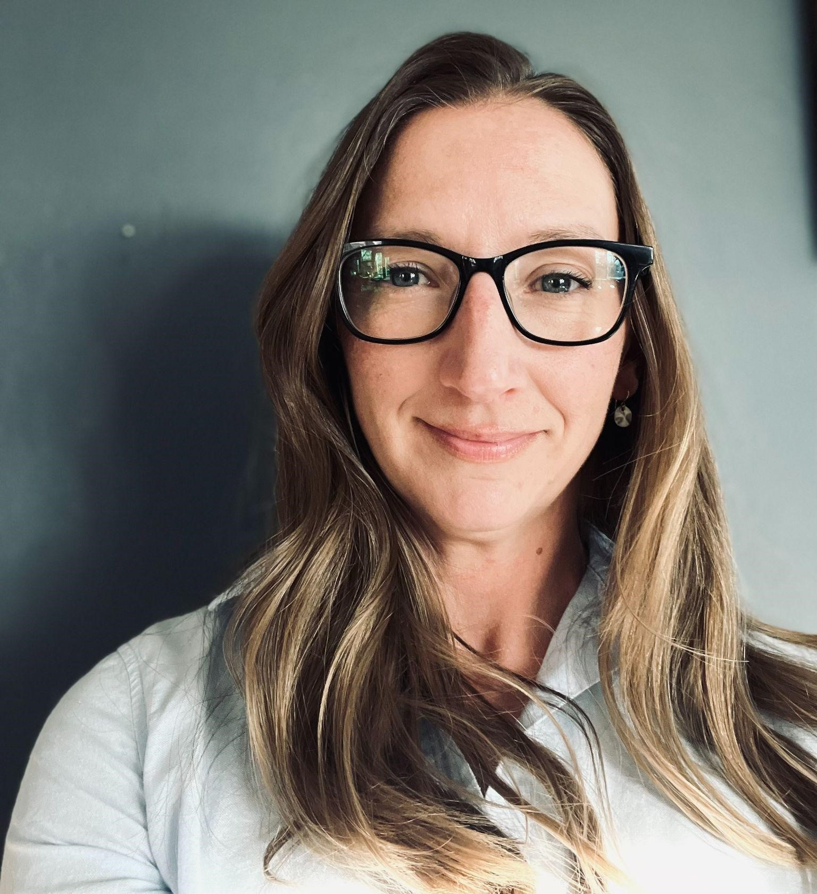
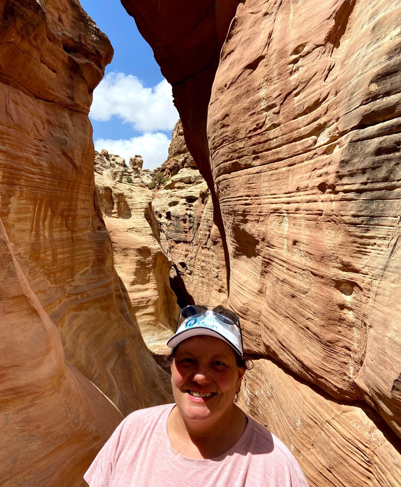
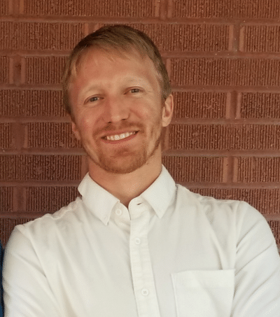
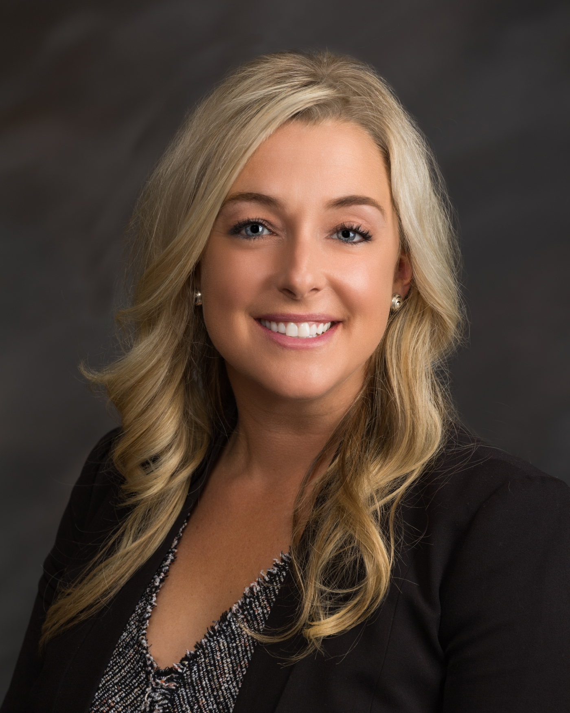

The conference will be LIVE at UDAQ this year (a streaming option will be available).
COVID Requirements will be the current recommendations from the Health Department.
7th Annual conference: Thursday,
March 30, 2023
Registration deadline: March 20, 2023.
Abstract
deadline: February 27, 2023.
Conference Schedule
You can download the 2023 Conference Flyer.
2022, Air Quality: Science for Solutions 5
Air Quality: Science for Solutions is an annual conference on air quality, especially for Utah and the Intermountain West. It began with a pair of conferences by the same name hosted by the Utah Department of Environmental Quality, Division of Air Quality; the Program for Air Quality Health and Society at the University of Utah; and the Utah State University Bingham Entrepreneurship & Energy Research Center in 2015.The mission of this conference is to bridge divides that separate researchers of various disciplines from each other, from professionals in the industrial and regulatory realms, and from the public, and to facilitate a cross-pollination of ideas working towards the development of solutions.
|
   |
Welcome and Opening Q&A will be discussing ozone and
State Implementation Plan (SIP) issues. The three person
UDAQ panel
is Becky Close, Sheila Vance, and Ryan Bares. Becky Close is the Utah Division of Air Quality Environmental Program Manager overseeing the Policy Section, which coordinates state implementation plans and administers grant and incentive programs to reduce harmful air emissions. Becky has worked at DAQ for six years, and was previously the PM2.5 coordinator. Prior to DAQ, Becky earned a master's degree in Environmental Science from the University of Utah, and worked on legacy atomic bomb waste remediation for an environmental consulting firm in Los Alamos, NM. Growing up on the western slope of Colorado, and having lived in the intermountain west most of her life, Becky enjoys exploring the outdoors with her family while hiking, backpacking, mountain biking, running, and skiing. Sheila Vance is an Environmental Scientist who has been with the Utah Division of Air Quality for a little over 6 years with a focus on winter time ozone pollution in the Uinta Basin. She has been a part of air quality rule development for oil and gas emission sources and research projects involving studies on the sources of VOC and NOx emissions in the Uinta Basin and impacts on the formation of ozone. She has a BS degree from the University of California Davis with majors in Environmental Toxicology and Physiology. She worked for the Hawaii Department of Health in their Hazardous Waste Division for several years and then came to Utah where she has lived for the last 25 years. Previous to working for the State of Utah, she worked for 19 years at the Tooele Chemical Demilitarization Facility where she was the Environmental Manager, and oversaw the successful clean closure of the hazardous waste incinerator and other waste management units that safely destroyed the weapons and chemical agents. Ryan Bares’s career in air quality started while conducting research at the University of Utah in the Departments of Biology and Atmospheric Sciences. During this time, Ryan participated in a wide array of studies looking at the convergence of anthropogenic emissions, atmospheric transport, and the resulting atmospheric chemistry. Through this research he gained a great appreciation for policy solutions that bridge the gap between good research and real world solutions aimed at addressing our pressing air quality challenges. This appreciation led Ryan to his current position, where he serves as the State Implementation Plan coordinator for ozone pollution along the Wasatch Front. |
|  | Keynote Speaker: Ashley Miller, JD, Executive
Director, BREATHE
Utah Ashley Miller is an attorney, originally from Lake Tahoe, CA. She has been with Breathe Utah for seven years. Her passions run deep in all things outdoors. She spends her free time with her family skiing, mountain biking and BMX racing. Ashley has worked hard for several years influencing state and local air quality policy. In 2017, she was appointed by Governor Herbert to the state Air Quality Policy Advisory Board and is currently serving her second term as Vice-Chair. She is also a member of the Salt Lake County Health Department Environmental Quality Advisory Commission, the Utah Inland Port Community Advisory Council, and served on the state Volkswagen Mitigation Plan Advisory Committee. Ashley wrote the air quality column for CATALYST Magazine from 2017 through 2021. |
2022 Conference Flyer
Conference Format:
The conference will return to a face-to-face format this year. There might be a virtual option if we can make that happen, details will be announced as we figure it out.
Topics
The subject of this conference is air science. Topic areas include atmospheric chemistry, health impacts, meteorology, emissions, modeling, and public policy. While this conference specializes in topics associated with air quality issues important to Utah and the Intermountain West, presentations on air quality topics that are related in some way will also be considered.
Oral Sessions
There are no parallel sessions. Oral presentations should be understandable, at least in part, to air scientists from all fields. A major goal of this conference is the crosspollination of ideas between fields of study. The oral talks are 10 to 12 minutes long with 3 minutes for questions and change over to the next talk.
Poster Sessions
The posters will be viewable at the conference for the duration of the conference. The breaks will be held near the posters to facilitate interaction. There will be a student poster competition as well.
UDAQ Academic Stakeholder Meeting
This is an independent group of regional academics involved in ongoing air quality research. A special meeting for the members of the UDAQ Academic Stakeholders group will be scheduled with this conference. Details will be released once the conference agenda has been finalized in the next week or two. Details on that group and the schedule will be announced on this webpage soon.